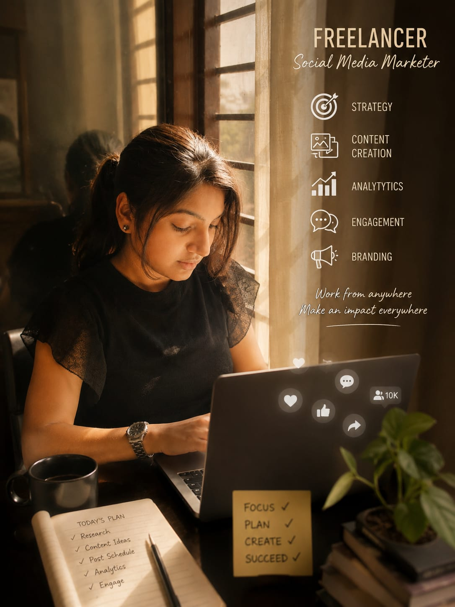

Published by Sneha Bhimini
Every professional journey begins with a single step, and mine started with a desire to learn, grow, and apply my creativity in real-world projects. Freelancing gave me an opportunity to explore my interests while continuously developing practical skills.
I began by learning video editing, content creation, and social media marketing. As I practiced these skills, I gained confidence in creating digital content and understanding how effective communication and creativity can make a meaningful impact.
Working on projects helped me improve my technical abilities, manage time effectively, and understand the importance of consistency and professionalism. Every new task became an opportunity to learn something valuable.
Freelancing has encouraged me to continue improving my skills, explore new opportunities, and contribute to meaningful projects. My goal is to keep learning and creating high-quality work while building strong professional relationships.